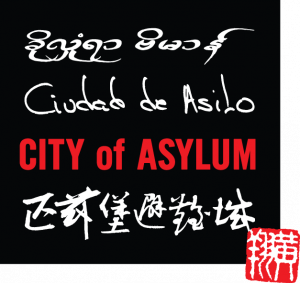

Hi, hello! I’m a third year doctoral student at the University of Nevada, Reno in Angela Smilanich’s lab studying plant-insect-natural enemy interactions. Below is an immersive version of my CV with some bonus content. If you’re looking for the minimalist pdf, here it is: [CV]
Education
University of Nevada, Reno
Doctoral student in Ecology, Evolution, and Conservation Biology
2023 - present
Coursework: Entomology, Causality, Bayesian Hierarchical Modeling, Computational Biological Genomics, Science Communication & Writing, Chemistry of Biological Interactions
University of Pittsburgh
BA in English Writing, Minors: Computer Science, Physics, Chemistry
2015 - 2019
Coursework: Organic Chemistry, Thermal and Modern Physics, Biochemistry, Intermediate Programming with Java, Discrete Structures, Algorithm and Data Structures, Ecuador Forest Ecology, Ecological Field Studies, Undergraduate Research
Experience
 City of Asylum, Pittsburgh, PA
Volunteer, Bookseller, Administrative Assistant, Data Analyst
August 2016 – June 2021
I started as a volunteer in 2016 and helped with program logistics. I was later employed as a bookseller in 2017 and helped create social media posts to highlight translated literature and our writers-in-residence. In 2019 after I graduated, I was hired full-time as an administrative assistant and promoted to a data analyst position in 2020. I helped shift our usual in-person events to an online platform, and helped analyze audience metrics to apply to grants and showcase our impact to sponsors when funding was cut.
City of Asylum, Pittsburgh is the largest sanctuary for exiled writers and artists in the world. City of Asylum’s mission is to protect and house exiled writers while also protecting and celebrating freedom of expression by hosting free, multicultural, cross-disciplinary programs at Alphabet City, Pittsburgh.
Dhirana, Pittsburgh, PA
Social Media and Design Committee, Sponsorship Committee, Executive Board
August 2015 – May 2019
In 2016 and 2017, I helped design the logo, merchandise, and social media for our organization to be distributed and marketed. In 2018, I helped raise $50,001 to donate to the Birmingham Free Clinic in Pittsburgh. BFC’s mission is to provide healthcare to the uninsured in Pittsburgh. In 2019, I connected Dhirana with national and international companies and got sponsors to fund our mission.
Dhirana is a student-run non-profit organization whose mission is to 1) bring awareness and appreciation to Indian Classical Dance, 2) provide a platform for collegiate Indian Classical dancers to perform and compete at the national level, 3) give back to the community by donating all ticket sales to Birmingham Free Clinic.
Awards
| Column 1 | Column 2 | Column 3 |
| content | content | content |
Skills
Languages: English (native), Malayalam (native), Spanish (basic)
Programming Languages: R, Python, Latex, HTML, CSS, Javascript, C++, MATLAB, UNIX
Lab: DNA extractions, quantitative PCR, PCR gel electrophoresis, immune assays (hemocyte counts, phenoloxidase activity, melanization of filaments), chemical analyses (in training)
Practical: Wilderness Training (6/10/2024), First Aid CPR AED (1/15/2023)
Arts + Hobbies: Bharatanatyam (since 2000), volleyball (since 2009), poetry (since 2011)
Uses
Side Quests
Trad Climbing Festival
I joined Ripieno Studios at the Carnegie Mellon Entertainment Technology Center to make this short film. I represented Bharatanatyam, an Indian Classical Dance form that originated 2000 years ago by choreographing a segment and getting motion captured.
Motion Capture for a Short Film
I joined Ripieno Studios at the Carnegie Mellon Entertainment Technology Center to make this short film. I represented Bharatanatyam, an Indian Classical Dance form that originated 2000 years ago by choreographing a segment and getting motion captured.